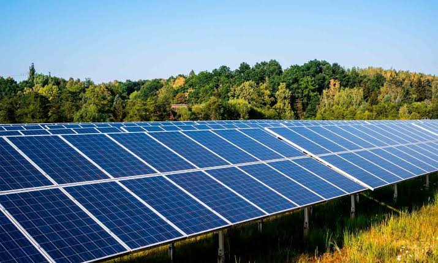
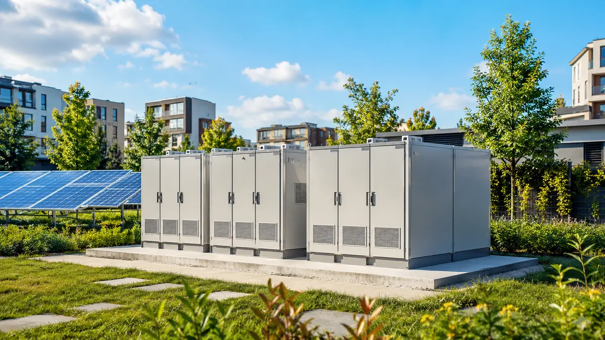
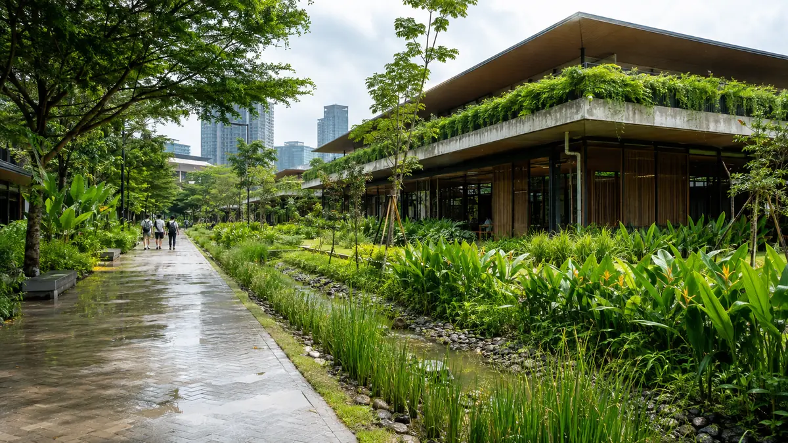

Reduce harm at the source
Cleaner production avoids waste and pollution before they enter the environment.
Green technology uses scientific knowledge, engineering and responsible design to reduce environmental damage, conserve natural resource and support a sustainable quality of life.
Green technology is not a single invention. It includes products, systems and everyday practices that prevent pollution, save energy and materials and replace harmful processes with cleaner choices.
Cleaner production avoids waste and pollution before they enter the environment.
Efficient systems provide the same service while consuming less energy, water and raw material.
Sustainable design helps ecosystems recover and remain resilient for future generations.
This short video introduces the main idea. As you watch, notice how green technology connects cleaner choices with the way we use energy, water and materials.
Green technology is already part of homes, campuses, transport systems and city services.

Solar, wind, hydro and other renewable sources produce power with lower emissions.

Smart grids, storage and efficient devices reduce unnecessary energy consumption.
Monitoring, treatment and reuse technologies protect clean water and reduce waste.

Efficient buildings, public transport and urban greenery make cities more livable.
It can improve daily life while reducing pressure on the environment.
Cleaner energy and production methods improve environmental quality and public health.
Using less electricity, fuel, water and material can reduce operating costs over time.
Local clean energy, better infrastructure and responsible resource management help communities adapt to change.
Choose a question for a quick explanation.
Send us a question about green technology. You can review or remove your submitted questions below.
You have not submitted any questions yet.
Explore sustainable technologies, smart cities and energy statistics across the rest of our website.